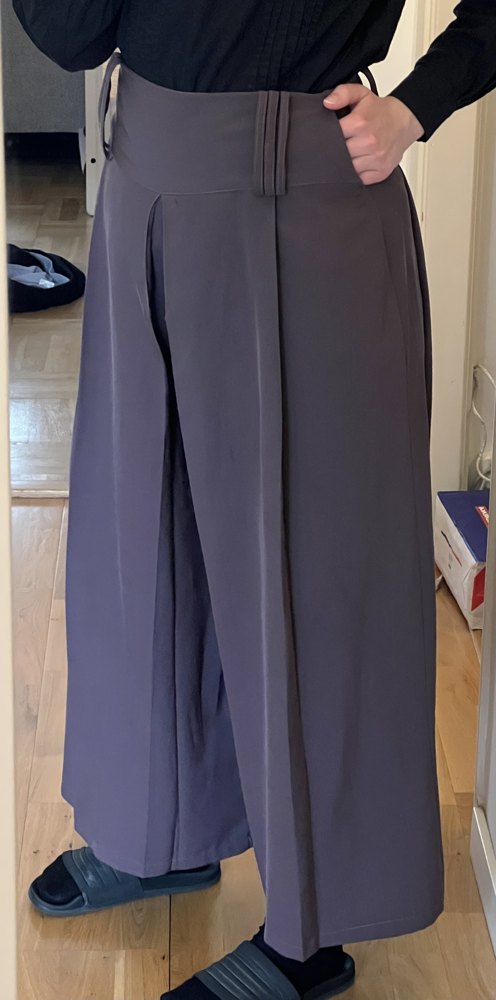

Blue Pinstripe suit
I found this mansfield skirt suit at myrorna, but it was a tiny bit too small for me. TODO describe edits and take pictures
Flowy Lavender pants
I found these nice pants at a thrift store in berlin, and I adjusted the waistband and added a pocket.
Dolce & Gabbana pants
Difficult to tailor things for someone who's not you it turns out